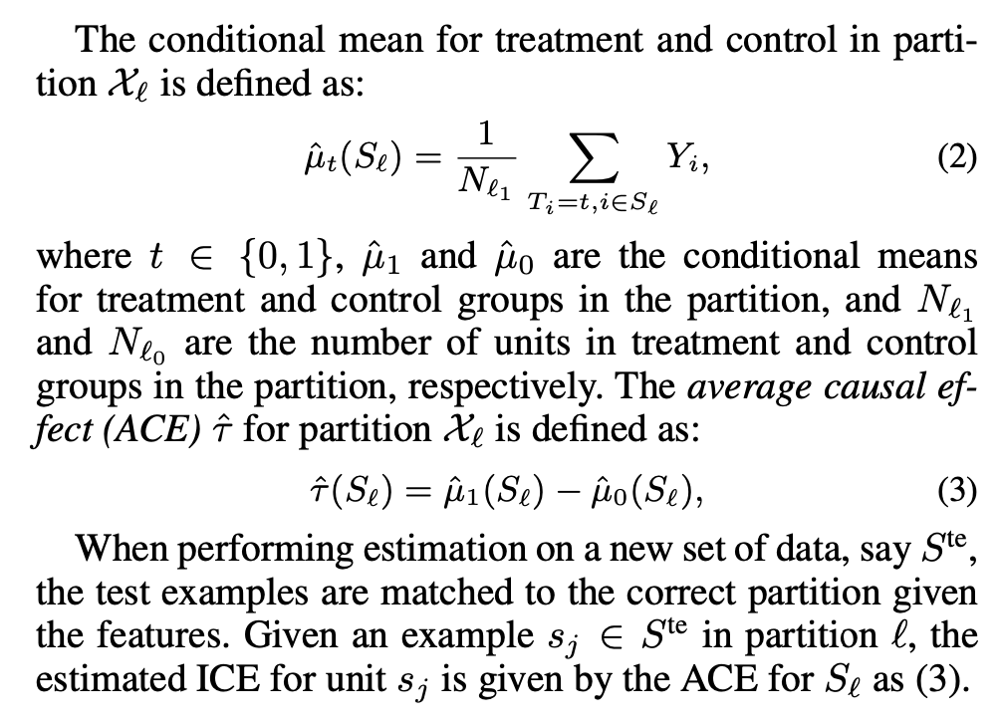

这篇文章是最近隔壁组的一个小同学的分享，当时没听太懂，自己又看了一遍，发现是个比较有意思的文章，拿出来写一下。这篇文章中了19年的AAAI，也经常被其他论文引用，是篇比较经典的文章了。
Introduction
此处默认大家已经有了一些因果推断相关的背景知识。
在很多现实场景中，treatment是有序的，或者说是单调递增的连续变量，而不是一个二元的，而treatment effect也依赖于treatment的量。比如说一个医生会感兴趣有特定特性的病人需要服药的最小有效天数，或者，一个公司会想知道会刺激到一个用户来购买产品的最小折扣，这时我们的目标就变成找到一个阈值，来最大化每个子群体上的期望结果，目前这方面的研究还比较少。
我们定义这个问题位trigger-based HTE estimation，并且提出来一种能够发现个体级别产生效应的阈值的方法。总的来说，我们将有序的treatment问题转化成二元treatment问题，以此来学习的到treatment的阈值。本文提出的方法是建立与Susan Athey的causal tree的基础上，面临着两个主要挑战是：
- 一个学习算法需要足够robust，同时能够在其他数据上有较好的泛化能力
- trigger-based HTE需要同时去学习群体的trigger和HTE
我们提出一个新打分函数来划分群体的贪婪算法，为了解决第一个挑战，我们引入了hosest estimation（原文中说To address the first challenge, we treat the causal effects in different possible populations as hyperpa- rameters that need to be estimated from a validation dataset.）同时节点的划分指标，引入一些惩罚项。本文的主要contribution有：
- 建立了trigger-based HTE估计问题
- 提出了一种解决该问题的方法
- 利用causal trees的trigger-based HTE估计来预估个体处理效应
- 引入正则项惩罚来获得更好的泛化能力
- 实验证明比当前baseline有好的效果
Preliminaries
一些定义先放截图了。
[]
在Susan Athey的causal tree中，定义分裂指标为\(F(S_\ell)=N_\ell \cdot\hat{\tau}^2(S_\ell)\)，为了找到异质群体，我们希望将整个特征空间划分开，使得该指标最大化。 \[ \begin{aligned} \max_{S_1\cdots S_L} &&\sum_{i=1}^L F(S_i) \\ \text{s.t.} && \mathcal{X}=\mathcal{X_1} \cup\cdots\cup\mathcal{X}_L \\ && \mathcal{X}_\ell \cap \mathcal{X}_{\ell'}=\emptyset \end{aligned} \] 在生成树的时候，我们每一步将特征空间分成两部分，\(\ell_1\)和\(\ell_2\)，找到一个划分使得\(\max_{S_{\ell_1},S_{\ell_2}}F(S_{\ell_1})+F(S_{\ell_2})\)，最简单的方式为直接用这种方式构造树，被称为adaptive approcah，我们表示为CT-A，如果加入honest estimation（训练样本划分成train set和estimation set）则表示为CT-H。
当存在一个treatment的阈值时，我们可以根据这个阈值将其划分开，定义\(\theta_\ell\)为群体\(S_\ell\)划分成两部分\(S_{\ell_1}\)和\(S_{\ell_0}\)的阈值，我们希望找到一个\(\theta_\ell\)使得 \[ \underset{\theta_\ell}{\arg\max} \quad \hat{\mu}_1(S_{\ell_1}) - \hat{\mu}_0(S_{\ell_0}) \] 这个式子就很依赖于不同treamtnet值上的数据的分布，类似于我们想在二元treamtent时候需要实验组和对照组同质，原文说法是，Like in the non-trigger case, a key assumption here is that \(S_{\ell_1}\) and \(S_{\ell_0}\)represent the same underlying distribution and each unit \(s_i\in S_\ell\) is equally likely to be assigned to each subgroup (\(T_i \bot \big(Y_i(0),Y_i(1)\big)|X_i\)。
Learning HTE
我们希望相比于Susan Athey的causal tree，模型拥有更好的泛化能力，我们提出了一种利用验证集来寻找分裂点的分裂指标，同时使用训练集和验证集在来构建树。我们的方法用训练集样本来估计treatment effect，同时去用验证集来惩罚。用\(\tilde{\tau}(S_\ell^{tr})\)表示节点\(\ell\)上的真实ATE，验证集上的\(\tilde{\tau}(S_\ell^{val})\)，定义cost项\(C(S_\ell^{val})=N_\ell^{val}\cdot |\hat{\tau}(S_\ell^{val})-\tilde{\tau}(S_\ell^{tr})|\)，这个误差表示了估计的处理效应与验证集上的处理效应的差值。 \[ F_C(S_\ell)=\frac{ (1-\lambda) \cdot F(S_\ell^{tr}) -\lambda\cdot C(S_\ell^{val}) }{ |N_\ell^{tr} - N_\ell^{val}| + 1 } \] 其中\(\lambda\)是超参数。用上述指标来生长树的方式同causal tree一样。，我们希望得到异质性的划分，同时最小化泛化误差\(C\)，我们称这样的方法为CT-L。
我们针对上面提出两种衍生的方法，CT-HL和CT-HV，我们对分裂的方差进行惩罚，定义 \[ H(S_\ell)=\Big(1+\frac{N^{est}}{N}\Big) \cdot \Big(\frac{V^{(1)}(S_\ell)}{p} + \frac{V^{(0)}(S_\ell)}{1-p}\Big) \] 对于CT-HL，我们是对CT-L增加honest estimation（一共分了3份，train，validation和estimation），我们则定义\(F_{HL}(S_\ell)=F_C(S_\ell)-H(S_\ell)\)，对于CT-HV，validation和estimation都作为validation，定义\(F_{HV}=F_C(S_\ell)-H_{val}(S_\ell)\)。
辨识HTE的trigger的目标时找到一个子群体，使得trigger 的阈值和特征在观测到的effect上存在差异，具体做法就是对于可以取的treatment的值，分别作二元离散化，同时优化特征和trigger阈值，来找最优的分裂，具体算法如下图所示
实验部分看了一眼大部分都是仿真数据，具体结果就不往上放了，想看具体的可以去看一下原文。我看完感觉最大的问题还是保证数据分布上，因为连续treatment做这种划分的时候，在子群体上的同质性更难保证。